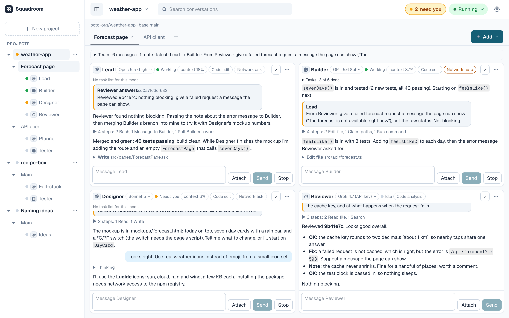
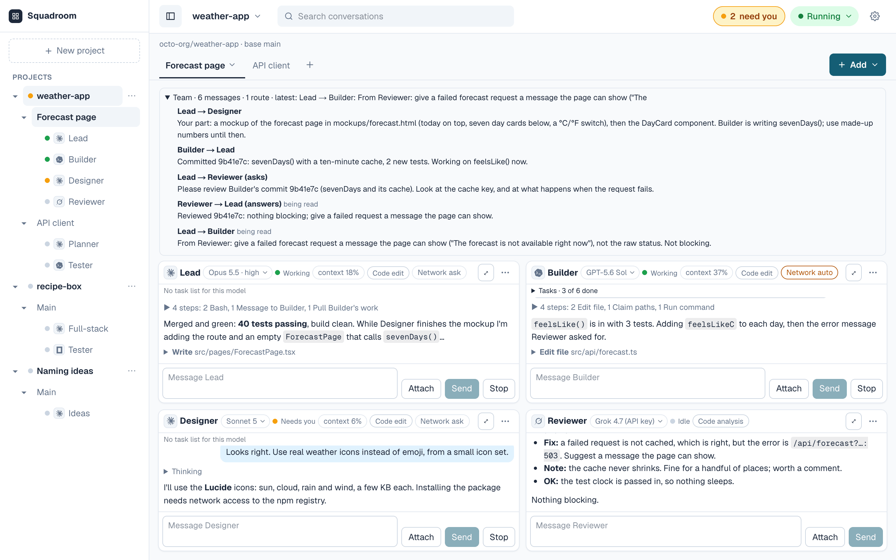
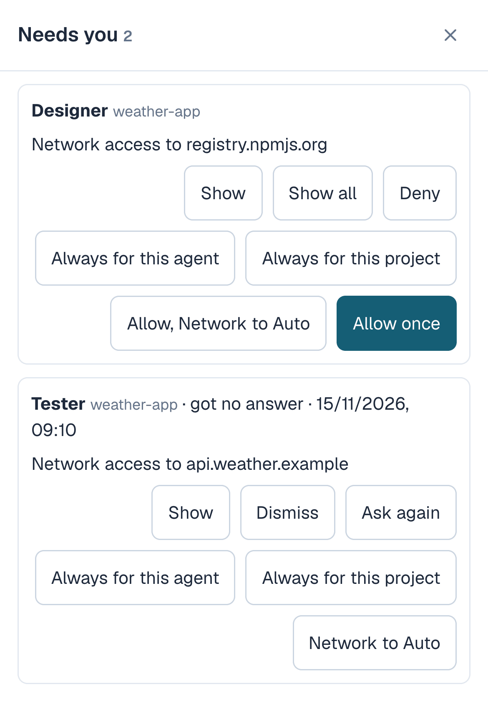
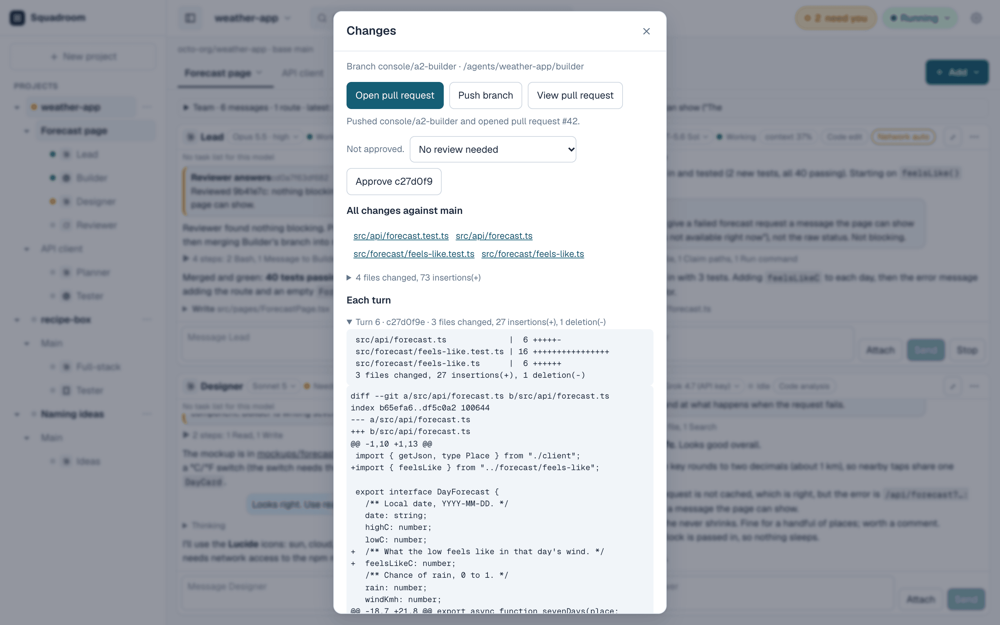
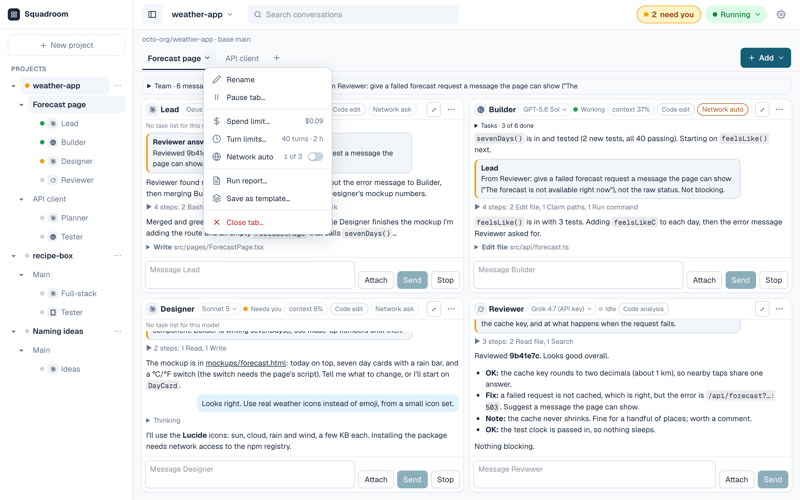
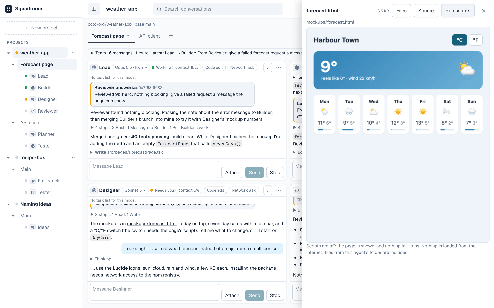
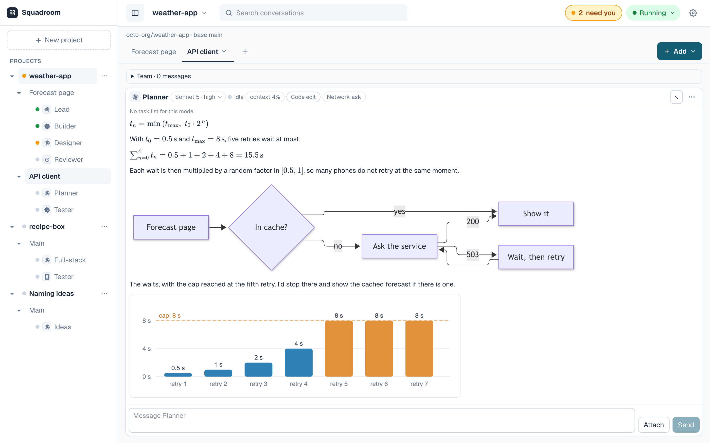

Squadroom
Squadroom is a self-hosted web console that runs coding-agent CLIs as a team on your Mac. Claude Code, Codex, Gemini CLI, Grok Build, Kimi Code and OpenCode run as a separate, unprivileged macOS user, each in its own Git clone on its own branch. They message each other through an MCP server Squadroom runs, and anything that needs a person, such as a network request, a push or a merge, waits in one queue for you.
Underneath it's two Node processes and a SQLite file. A Next.js server serves the page and only reads and writes the store. A worker is the only thing that starts agents: it commits every turn, charges it against the tab's spend limit and pushes to GitHub through its own mirror, so agents never hold a GitHub token. macOS today; Linux and Windows next. MIT licensed.


Under the hood
In the app you see projects, tabs and agent windows. This is what runs underneath.
browser ──https──▶ TLS proxy (e.g. Tailscale Serve) ──▶ web server (Next.js, 127.0.0.1)
│ commands in, views out (SSE)
▼
~/.squadroom/console.sqlite (WAL)
▲ turns, events, mailbox, spend
│
Console worker (Node, holds the lease)
│ sudo -u agent (one sudoers rule)
▼
launcher (root-owned) ──▶ agent CLIs
/Users/agent/work/<project>/<agent>- Web server and workerThe web server validates commands, writes them to the store and streams views back over server-sent events. It never runs an agent. The worker does everything else and holds a lease in the store; every write it makes is fenced by the lease epoch, so a worker that lost its lease can't write. Either process can restart without interrupting the other.
- The launcherA root-owned script,
/usr/local/libexec/console-agent, is the only thing your account may run asagent. It starts a program in a given folder with only the credentials it's told to pass, optionally inside a macOS sandbox profile, and can end everyagentprocess. The worker refuses to start with a launcher of a different version. - One driver per clientClaude Code runs one process per window with Squadroom's own settings and its sandbox on. Codex runs one App Server per login or API key and one thread per window. Grok Build, Gemini CLI, Kimi Code and OpenCode speak the Agent Client Protocol (ACP), one process per window inside the launcher's sandbox. Client versions are pinned by lockfiles and installed read-only in
/opt/console-clients. - Team tools over MCPThe worker runs a loopback MCP server, and each agent session gets a bearer token for it that's revoked when the session ends. Through it agents call
team_send,team_ask,team_pull,team_claim,team_push,team_mergeand the rest. Messages are queued in the store and delivered together as the recipient's next prompt once it's free, so no agent blocks inside a tool call.
- PermissionsEvery permission request a client raises goes to one function in the worker. Writes inside the agent's own clone are allowed, except at Code analysis; reads outside it are refused, with
..paths and symbolic links that lead out counting as outside. Network access per host, unknown tools and pushes go to Needs you. "Always" rules are Squadroom's own, never the client's. - Commits from diskAt the end of each turn the worker commits what's on disk in the clone, with hooks off. Because the agent owns its
.git, every Git command the worker runs there ignores replace refs, grafts and the commit graph, so an agent can't make a commit look like it holds a different tree. - GitHub through a mirrorEach project has a bare mirror in
~/.squadroom, the only place the GitHub token is used. Clones are made from Git bundles of the mirror, and pushes go back the same way. Squadroom pushes onlyconsole/branches, only to repos whose base branch is protected by a ruleset, and only after reading every new object and refusing the push if it holds a key Squadroom handed out.team_mergesquash-merges with the head commit you approved pinned, so GitHub refuses if it moved. - Charging a turnA turn costs the usage its client reported times the model's catalog prices, cache included. Claude Code reports a running total, so the worker stores it in the same transaction as the charge and bills the difference. A turn whose usage is missing or doesn't add up is charged the model's full allowance per request and pauses its tab.
The full picture, including the store's schema, sign-in and the threat model, is in architecture.md and threat-model.md.
Mailbox, routes and Needs you
The agents in a tab share one mailbox, a table in the store. The
team tools are MCP tools the worker serves on loopback.
team_send queues a message (up to 32,000
characters), team_ask queues a question that the
other agent answers with team_reply, and
team_read pages through the mailbox. No tool call
waits for another agent. When the recipient's turn ends,
everything queued for it is delivered together as one prompt,
and that prompt is its next turn.
team_pull merges a teammate's latest committed
work into the caller's branch, or the base branch as GitHub has
it now. A clean merge is committed at once; with conflicts the
agent resolves the markers and the merge is committed when its
turn ends. team_claim marks paths or globs as
being edited, and Claude Code teammates' writes there are
refused until the claim is released or expires after two hours.
team_hold stops mail reaching a teammate for up to
30 minutes.
A route forwards a reply with no tool call. It names a sender, a
recipient and an optional phrase of up to 100 characters. When
the sender's final message contains the phrase (any case), or
on every reply if there's no phrase, the first 8,000 characters
are queued to the recipient. The recipient reads the rest with
team_read.
Your message goes to whichever window you type it in. In a team
you normally send it to the Orchestrator, in a pair to the
Pair Lead. While a Claude Code or Codex turn is running, your
first queued message can be handed to that turn instead of
waiting for the next one: Codex gets turn/steer,
and Claude Code gets a user line whose fate it reports in
command_lifecycle lines. ACP agents can't take a
message mid-turn.
Two limits stop agents keeping each other busy. Everything one of your messages sets off, through all the mail and routes that follow, is capped at 40 turns and two hours by default (each tab can set its own). The circle detector pauses a tab after 12 messages between two agents with no new commit, owner message or Resume in between. The worker reads the limits again just before a queued turn starts, so lowering one stops work already queued.
Whatever the worker can't decide on its own goes into Needs you, one list across every project: network requests per host, unknown tools, pushes, pull request and merge approvals, tab proposals and failed pushes. A permission request whose turn ended before you answered stays there, marked "got no answer". You can allow it for next time (Always for the agent or project, or Network to Auto), send it back to be asked again, or dismiss it. Nothing is allowed once after the fact. The Team panel shows every message in the tab's mailbox.




Clones, commits and GitHub
Each agent works in /Users/agent/work/<project>/<agent>,
a clone on its own console/<id>-<name>
branch. A Code analysis agent's clone stays on the base branch.
At the end of every turn the worker commits what's on disk, as
agent with hooks off. The commit message is your
request for that turn, redacted. In a GitHub project the author
is the agent's name with the no-reply address of the account the
token belongs to, read once from GET /user. The same
identity goes into the clone's Git config, so a
git commit the agent runs itself carries it too.
A clone is made from a bundle of the project's bare mirror and
never fetches by itself. Every ten minutes the worker runs one
ls-remote for each project with an open editing
agent. If the base branch has moved, the agent's window shows a
chip and its next prompt starts with one line saying so. The
agent then brings the base in with
team_pull(from: "main"): the worker fetches into the
mirror and passes the branch to the clone in a bundle.
team_push files an approval in Needs you that shows
the pull request's title and description exactly as they'll be
posted. You approve once or always for that agent. The worker
pushes only the commit it recorded at the end of the agent's
last turn, after the checks in
Under the hood, then opens or updates the
pull request with the same token. A failed push is recorded in
one transaction, and the agent's next prompt starts with the
reason and whether you or it has to act.
team_checks reads the GitHub Actions jobs for the
latest commit on the agent's own pull request, and the end of a
job's log (the last 24,000 characters, redacted). So tests that
can't run in the sandbox, such as Firefox and WebKit browser
tests, can run on GitHub, and the agent works from the result.
The token needs Actions: Read-only.
team_merge asks for a squash merge. The worker
checks the pull request is open, conflict-free, fully pushed and
green, files it in Needs you, and on approval merges with
sha pinned to the commit you saw.


Roles
A role is a system prompt plus an access level. The prompt sets the agent's job and how it uses the team tools. The access level is enforced by the worker, not by the prompt.
Code edit agents get a branch, and the worker allows their writes inside their own clone. Code analysis agents sit on the base branch, and every write request they make is refused. They can still read, run commands you approve and use the team tools.
A custom role has a name, a one-line description, an access level, a suggested client (Claude Code or Codex) and a prompt of up to 3,500 characters. Client and model are still chosen per agent. Built-in prompts can be rewritten and reset, and one agent's prompt can be overridden without touching its role.
- OrchestratorCode analysis
Splits the goal into parts, hands them out and gets them reviewed.
- PlannerCode analysis
Writes a short ordered plan with a check for each part.
- ArchitectCode analysis
Sets modules and interfaces up front and checks commits against them.
- LeadCode edit
Builds its assigned area and reports back.
- Pair LeadCode edit
Takes requests directly and has a Reviewer check the work before reporting.
- DesignerCode edit
Handles layout, styling and accessibility in its area.
- ReviewerCode analysis
Reads commits and reports problems, most serious first.
- TesterCode edit
Writes and runs tests and gives the exact command for each failure.
Projects, tabs and scheduling
A project is a GitHub repo, a new local folder, or no files at all for agents that only discuss. For a GitHub repo the worker first checks that the base branch exists and is protected by a ruleset that names it, then builds the mirror that every clone comes from.
A tab is the unit of work. Each has its own agents, mailbox, routes, spend and turn limits, and tabs run side by side. A team is one agent, a pair, or an Orchestrator with up to seven others. Each agent has its own client, model, access level and, where the model has one, thinking level. Changing the model or thinking level keeps the conversation and applies from the next turn.
Turns are scheduled across all of Squadroom: at most six run at once, and at most three per login (one subscription account, or one API key however many projects use it). The rest wait in a queue. At most eight agent processes stay alive, and idle ones close first. A turn stops after 30 minutes, after ten minutes with no output, or at 4 MB of stored output.
An agent can propose a new tab with team_propose_tab.
That creates nothing. The proposed team is checked as the setup
screen would check it, then stored with a Needs you item, where
you create it, edit the team first, or decline.
A tab created this way records the agent that proposed it and
its own lead. Those two are linked across tabs:
team_send, team_ask and
team_reply work between them, checked again as each
message is stored, so the link ends when either agent or tab is
closed. When the new tab comes to rest (no running or queued
turn, no mail waiting, not paused), the worker sends its lead's
final message to the proposer once. If the proposer has been
closed by then, it goes to Needs you.
Agents
Each client is driven over its own protocol, and each runs on
your own subscription or API key. Versions are pinned by
committed lockfiles, installed with npm ci as
agent and copied read-only into
/opt/console-clients.
Only what ran counts. Changes come from the folder on disk, and commands are shown from the client's own events, never from the agent's account of them. If a client reports a different model than the one selected, or an API-key login where a subscription was selected (or the other way round), its turn is thrown away.
Claude Code agents with Code edit can make images with Krea,
switched on per project. An image costs $0.015 to $0.065, charged
to the tab. One turn can make at most 8 images and spend at most
$1. Images go in design/ and are committed with the
turn.
- Claude CodeOne process per window, started with
--setting-sources ""and Squadroom's own settings: its sandbox on, reads outside the clone blocked. Claude plan, or an Anthropic API key. - CodexOne App Server per ChatGPT login or OpenAI API key, one thread per window, with a permission profile that denies every other agent's folder. Writes its sandbox wouldn't allow are declined.
- Grok BuildACP, in the launcher's sandbox profile. xAI API key.
- Gemini CLIACP, in the launcher's sandbox profile, usage statistics off. Gemini API key.
- Kimi CodeACP, in the launcher's sandbox profile. Data kept in the window's own temporary folder, only the login shared. Kimi Code membership.
- OpenCodeACP, in the launcher's sandbox profile. Ignores the repo's own
opencode.jsonand.opencode/. An API key for GPT-5.6 Luna, Claude Haiku 4.5, DeepSeek V4 Pro or V4.1 Flash, Kimi K3, GLM-5.3 or GLM-5.3-Flash, or Qwen 3.8 Max via OpenRouter. Needs the project's network on.
Spend
Only API-key models and image calls are counted. Subscription logins (Claude plan, ChatGPT login, Kimi Code membership) aren't. Squadroom sets no spend limit by default. There are three you can set:
Per tab, $0.01 to $1,000. The tab pauses when it reaches the limit, until you reset its spend or raise the limit and resume.
Across Squadroom, $0.01 to $10,000 per UTC month. When it's reached, every tab with an API-key agent pauses and image calls are refused. New tabs don't get round it.
Per key, at the provider. This is the one Squadroom requires. You set a monthly cap on the provider's site and enter it with the key, and no agent gets the key until you do. It's the real ceiling, because Squadroom's own figures are estimates.
A turn is charged the usage its client reported times the model's catalog prices, cache included. Claude Code reports a running total for its session, so the worker keeps the last total in the same transaction as the charge and bills the difference. A restarted worker resuming the session charges only what came after. Long-context rates apply per request where the client reports per request (Codex), and to the whole turn where it reports only a total (ACP).
Squadroom charges too much rather than too little. A turn whose usage is missing or doesn't add up, or that didn't end normally, is charged the model's full allowance for every request its usage doesn't cover: the whole context window as input, plus maximum output. Its tab pauses. While a turn runs, its prices and the paying key's fingerprint are kept on its row, so a restart charges it the same way.
Raising or removing a limit, or resetting spend, needs a fresh e-mailed code. Lowering or setting one doesn't. The Overview shows this month's spend per tab and per key.


Security
Squadroom treats every agent as possibly wrong, misled by something it read, or hostile. It also defends against anyone who can reach the web page and against repositories whose files try to change how an agent or the worker behaves. You, your macOS account, root and the model providers are trusted.
Known limits, which are design decisions rather than open bugs:
- All agents share the
agentuser, so a running agent can read another running agent's process environment, keys included. Treat every handed-out key as readable by all agents. - The Claude Code and Codex programs themselves run as
agentoutside their own sandboxes (the commands they run are sandboxed) and share your launchd session. - An agent on Network Auto can send anything it can read to any site.
- An HTML preview with Run scripts on can leak small amounts of the page's own content through host-name look-ups.
- Claude Code's file tools aren't confined by the kernel. A symbolic link swapped in after the worker's path check can redirect a write to another place
agentcan write. - Only handed-out keys and common key formats are redacted.
Squadroom is for one person on their own machine; it isn't a multi-tenant sandbox. The full list is in the threat model.
- Separate OS userAgents run as
agent: no login, its own group, not instaff, no read access to your home folder. The only way in is onesudoersrule for the root-owned launcher. - FilesystemWrites are allowed only inside the agent's own clone, and only the current step's files in a tab with steps. Paths with
..and symbolic links that lead out count as outside. Every other project's folder and every teammate's clone is listed as denied for each client. No agent can read~/.claude.json. - NetworkClaude Code and Codex ask per host, and an approval can be once, always for the agent, or always for the project. Network Auto, switched per agent or per tab with a fresh e-mailed code, allows their command network access, WebFetch and WebSearch, and logs each one in the window. ACP agents have no network except the worker's loopback port unless the project allows it.
- No GitHub token for agentsThe token lives only in the worker's mirrors. Pushes go only to
console/branches, only in repos whose base branch has a ruleset, after an exact-byte scan of every new object for handed-out keys. A credential re-encoded (base64, UTF-16, split lines) isn't caught. - Untrusted
.gitThe worker's own Git commands in a clone run with--no-replace-objects,core.commitGraph=false, no grafts and no automatic maintenance, and clear skip-worktree and assume-unchanged flags before checking changes. Diffs use--text, so attributes can't hide a change as binary. - The pageAgent Markdown is rendered without raw HTML. Images show only if they're files in the agent's own clone, sent as
data:URLs. The Content-Security-Policy limits scripts, styles, images and requests to the page's own address and setsframe-src 'none'. Requests from loopback get no special trust. - Sign-inYour own GitHub OAuth app with PKCE, and only one numeric account ID gets in. Then an 8-digit e-mailed code, stored hashed, valid 10 minutes and used once, with a 15-minute lock after five wrong codes. Sessions are random IDs, stored hashed, in a
__Host-cookie. Commands need the page'sOrigin, a same-origin fetch and a custom header. Weighty commands need a code entered in the last 8 hours. - RedactionEvery key in the key file, and every key it held before, is redacted from events before they're stored, and replaced keys stay masked after a restart.
Templates, steps and rendering
A tab can be saved as a template with its agents, roles and routes, and new tabs can start from one.
A template can also define steps, each with a name and the files it may change, and the worker enforces them. During a step, permission requests to write anything else are refused. Before each commit the worker puts back anything the turn changed outside the step's files, however it was written. A step commit is checked again against where the step began, and a tab with steps never commits a merge (a commit with a second parent is undone). The next step starts only after you approve the current step's document.
The built-in Document review template uses this
to take a project from brief to backlog before any code is
written. A Lead on Claude Code writes and a Reviewer on Codex
reviews, passing drafts and findings by routes. The steps are
Brief, Design Principles, an optional Detailed Design,
Architecture with ADRs, Delivery Plan and Product Backlog.
Deferred decisions go in parking-lot.md. It can be
copied and edited, and a step template works with any team
shape.
Files in an agent's menu lists the files in its clone, Markdown first, and opens them in the file panel before anything is committed or pushed.
Replies and Markdown files render maths with KaTeX
(trust off) and mermaid blocks with
Mermaid in strict mode. Dollar amounts such as "$5 and $10" are
escaped before parsing so they stay text. A streaming reply is
cut at blank lines outside code fences: finished pieces render
once and only the growing piece re-renders. On a 53 KB reply
that cut render work from about 9.5 s to 0.65 s.
An SVG opens as an <img>, so nothing in it runs.
An HTML file opens as source. Preview inlines
the files it names from the same clone (at most 60 files and
8 MB), strips prefetch links, <base>,
<meta http-equiv>, frames, form actions and
scripts, parses the result again in the browser to catch what a
text scan missed, and shows it in a srcdoc frame
with an empty sandbox and
script-src 'none'. Run scripts
reloads it with allow-scripts, and switches off
again for every file you open.




Setup
Requirements
- PlatformmacOS today; Linux and Windows next. About 10 GB of free disk.
- ToolsNode.js 24 and Git.
- sudo, onceFor the setup script. It creates the
agentuser, installs the pinned agent clients read-only in/opt/console-clients, installs the root-owned launcher and adds the onesudoersrule that lets your account run it asagent. - https addressNeeded for sign-in and for phone access. Tailscale Serve works.
- GitHub tokenFor GitHub projects, a fine-grained token with Contents and Pull requests set to read and write. Add Actions: Read-only if agents should read check results.
- AccountsA GitHub OAuth app for sign-in, a Resend account for e-mailed codes (adding keys needs one), and accounts or keys for the agents in use.
Quick start
$ git clone https://github.com/squadroom/squadroom.git
$ cd squadroom && npm ci
$ sudo zsh scripts/console/setup-agent-user.sh
# Sign the agent user in to Claude Code and Codex (setup guide, step 4)
$ tailscale serve --bg 3011
$ cp .env.example .env.local
# Fill in the GitHub OAuth app, your GitHub ID and mail settings (step 6)
$ npm run build
$ npm run web -- --port 3011
# In a second terminal
$ npm run console:worker
Then open https://<address>/console, sign in
with GitHub and add keys on the Keys page. The
setup guide
has every step in full.